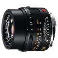

器材库 > 35mm画幅MF定焦镜头 > APO-Summicron-M 50/2 ASPH.

详细规格
镜头类型
标准镜头
发布日期
2012-05-10
厂家推荐价格
7,195.00 （美元）
焦距
50mm
最大光圈
f/2
最小光圈
f/16
视角（对角）
47°
视角（水平）
40°
视角（垂直）
27°
镜头结构
8片/5组
非球面镜片
1片
光圈叶片
11片
最近对焦距离
70cm
最大放大倍率
0.088倍
滤镜口径
39mm
镜头卡口
Leica M
防抖
否
颜色
黑色
尺寸
53×47mm
重量
300g
备注
金属镜筒, 金属卡口
安然踏步2014-03-29 00:005 分
操作性 5.00耐用性 5.00性价比 5.00解像力 5.00色彩还原 5.00机械结构 5.00
膘客老王2012-10-11 12:483.83 分
操作性 5.00耐用性 5.00性价比 2.00解像力 1.00色彩还原 5.00机械结构 5.00
深拓澜2012-06-17 03:455 分
操作性 5.00耐用性 5.00性价比 5.00解像力 5.00色彩还原 5.00机械结构 5.00
产品图 / 样片
Leica APO-Summicron-M 50/2 ASPH.